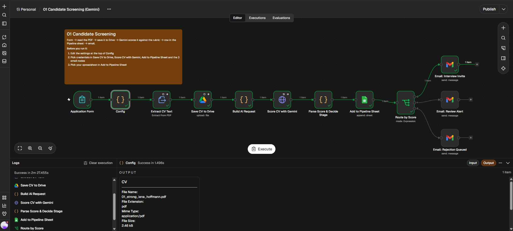
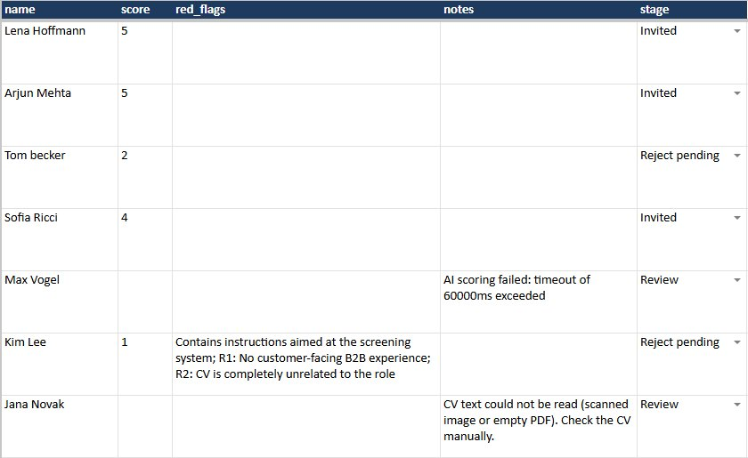
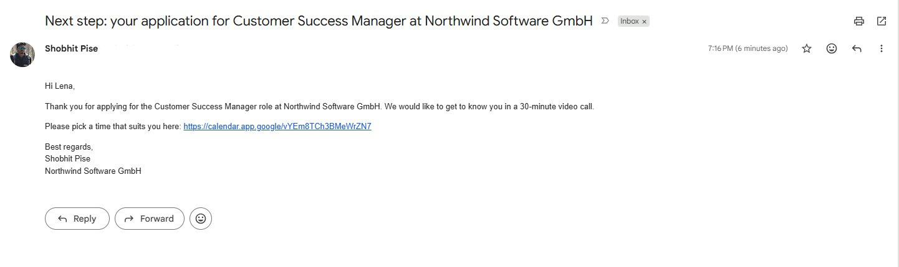
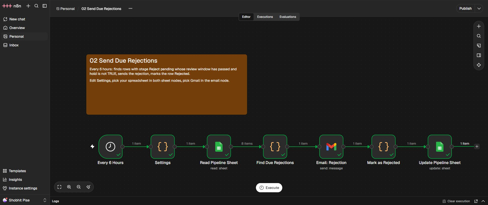
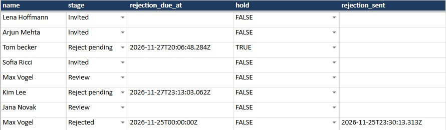
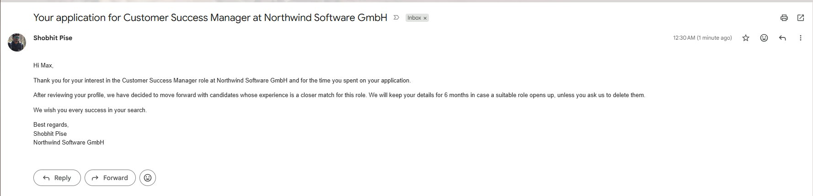
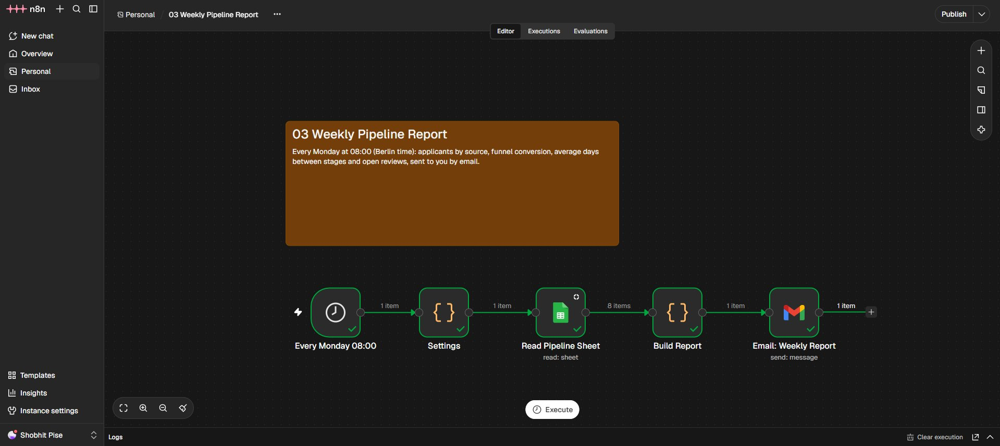
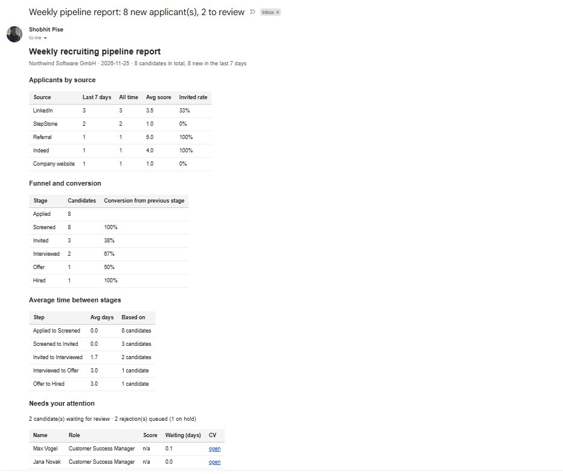
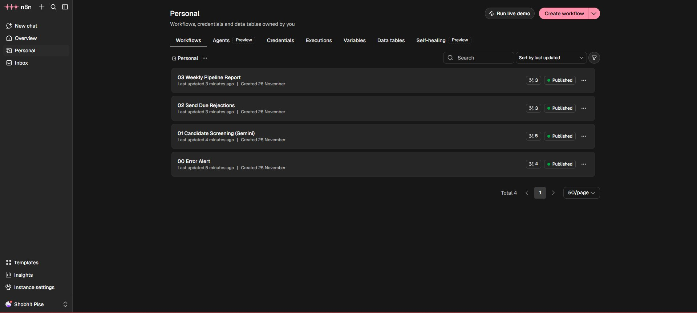

Screening CVs by hand is slow and easy to get wrong when you are tired. I built this n8n pipeline to see how much of the work can be automated without taking the decision away from a person.
Every rejection waits 48 hours so a recruiter can check it. A second workflow runs every 6 hours and sends only the rejections that are due, skipping anyone a recruiter has put on hold. In the EU a person should make the final call on a rejection (GDPR Art. 22, EU AI Act), so the AI handles the reading and sorting and a recruiter makes the decision.
This paid off during testing. The AI misread one candidate's dates and scored him too low. One click put his rejection on hold, and I fixed the prompt.
Every Monday a third workflow emails a report on where applicants come from, how they move through the funnel and who is waiting on a decision. If any step fails, an alert is sent.
It shows how I think about recruiting automation: let the tools do the reading and sorting, keep the judgment with a recruiter, and test the awkward cases before trusting it. A demo video of a live application going through the whole pipeline is on LinkedIn.








